دانشگاه زنجان
پایاننامهٔ دورهٔ کارشناسی
نگارش
استاد راهنما
اینجانب متعهد میشوم که مطالب مندرج در این پایاننامه با عنوان «» حاصل کار پژوهشی اینجانب است و به دستاوردهای پژوهشی دیگران که در این پژوهش از آنها استفاده شده است، مطابق مقررات ارجاع و در فهرست منابع و مآخذ ذکر گردیده است. این پایاننامه قبلاً برای احراز هیچ مدرک همسطح یا بالاتر ارائه نشده است.
نام و نام خانوادگی دانشجو:
امضا:
تاریخ:
در تهیهٔ این پروژه از دستیار هوش مصنوعی استفاده شده است. جزئیات به شرح زیر اعلام میشود:
| حوزه | میزان و نحوهٔ استفاده |
|---|---|
| ابزار مورد استفاده | دستیار برنامهنویسی مبتنی بر مدل زبانی بزرگ، در محیط خط فرمان و ویرایشگر کد. |
| نگارش کد | بخش قابل توجهی از کد با کمک دستیار نوشته شده است. نیازمندیها، معماری، تصمیمهای
فنی و پذیرش یا رد هر پیشنهاد بر عهدهٔ نگارنده بوده است. برای جلوگیری از انحراف
دستیار از قواعد پروژه، دو سند قید و شرط
(CLAUDE.md و AGENTS.md) در مخزن نوشته شده که ده قاعدهٔ
غیرقابل نقض پروژه را در هر جلسه به دستیار تحمیل میکند. |
| نگارش متن پایاننامه | مادهٔ خام همهٔ فصلها مستندات فنی خودِ پروژه است که در طول توسعه نوشته شدهاند. نگارنده متن را نوشته و ساختار داده است؛ کمکِ دستیار به ویرایش و یکدستسازی محدود بوده است. هیچ بخشی از این متن ترجمهٔ ماشینی یک منبع دیگر نیست و هیچ مرجعی بدون مطالعه ارجاع داده نشده است. |
| اعداد و ادعاهای متن | تمام آمار این سند در زمان نگارش با اجرای مستقیم روی پروژه اندازهگیری شده است:
شمارش رکوردها با پرسوجوی SQLite، شمارش مسیرها و خطوط کد با پیمایش
مخزن، و نتیجهٔ آزمونها با اجرای npm test. روش هر اندازهگیری در فصل
۶ آمده است. |
این دستیار نقش یک ابزار پرسرعت را داشته است، نه نقش تصمیمگیرنده. آنچه
ارزش مهندسی این کار را میسازد — انتخاب معماری، تشخیص اینکه کدام قابلیت ساخته نشود، و پیدا
کردن خطاهایی که خودِ ابزار تولید کرده بود — در فصلهای ۴ تا ۶ مستند شده است. نمونهٔ روشنش
در بخش ۲-۶ آمده: یک کلاس خطا که مکرراً تکرار میشد، شناسایی و به یک قاعدهٔ دائمی در
AGENTS.md تبدیل شد تا دوباره پیش نیاید.
نام و نام خانوادگی دانشجو:
امضا:
تاریخ:
بازار رسانههای تبلیغاتی محیطی (بیلبورد، پل عابر، استرابورد و نمایشگر شهری) در ایران بازاری پراکنده است. اطلاعات هر رسانه نزد مالک یا پیمانکار همان رسانه است و خریدارِ تبلیغات برای یافتن گزینهٔ مناسب باید جداگانه با چند واسطه تماس بگیرد. نتیجه، نبودِ یک نمای واحد و قابل جستوجو از عرضهٔ موجود است.
در این پایاننامه یک سامانهٔ تحت وب طراحی و پیادهسازی شده که این عرضه را در یک فهرست یکپارچهٔ قابل جستوجو گرد میآورد. سامانه دو گروه کاربر دارد: خریدار تبلیغات که میان ۳٬۵۳۶ رسانه در ۱۰۱ شهر جستوجو و فیلتر میکند، جزئیات و موقعیت هر رسانه را روی نقشه میبیند و پس از احراز هویت شمارهٔ تماس مالک را دریافت میکند؛ و صاحب رسانه که آگهی خود را از راه یک فرم چندمرحلهای ثبت میکند تا پس از بررسی کارشناس منتشر شود.
سامانه با Next.js 16 و React 19 در یک پایگاه کد یکپارچه پیادهسازی شده است؛ لایهٔ داده روی SQLite از طریق Prisma 7، و احراز هویت با توکن امضاشده در کوکی HttpOnly. رابط کاربری کاملاً فارسی و راستبهچپ است. دادهٔ اولیه با یک خزندهٔ Python از سه منبع عمومی گردآوری و پس از حذف تکراریها یکپارچه شده است.
تمرکز اصلی کار بر کیفیت مهندسی سمت سرور بوده است. هر مسیر برنامهنویسی از یک زنجیرهٔ بررسیِ ثابت میگذرد که ترتیب مرحلههایش عوض نمیشود؛ هر ورودیِ کاربر پیش از رسیدن به پایگاه داده در برابر یک طرحواره سنجیده میشود؛ سقفِ نرخِ درخواست به شناسهای بسته شده که کاربر نمیتواند جعلش کند؛ اگر کاربر یک درخواست را دو بار بفرستد اثرش تنها یک بار اعمال میشود؛ و هر تغییرِ مدیریتی در یک دفترِ تغییرناپذیر ثبت میگردد. صحت سامانه با ۱۱۳ آزمونِ خودکار سنجیده شده که هر یک با یک درخواست واقعیِ HTTP به سامانه کار میکند و همگی روی یک نسخهٔ ساختهشده (تولیدی) با موفقیت اجرا شدهاند.
این سامانه یک نمونهٔ کارآمد و در حال اجرا است، نه یک محصول مستقرشده. تا این تاریخ روی هیچ دامنهٔ عمومی مستقر نشده و روی رایانهٔ توسعه اجرا میشود. بخشهایی از آن عمداً ساخته نشدهاند (رزرو آنلاین، درگاه پرداخت، بهروزرسانیِ خودکارِ داده) و دلیل هر یک در متن آمده است. آنچه ساخته شده کار میکند و آزموده شده؛ آنچه نشده، فهرست و توجیه شده است. مسیر تکمیل آن نیز روشن و بدون نیاز به بازطراحی است (فصل ۷).
این نخستین وبسایتی است که من، علیرضا زارعیان، در تمامِ عمرم ساختهام — نخستینبار است که یک سامانهٔ تحت وب را از صفر طراحی و پیادهسازی میکنم. تلاش کردهام کیفیتِ مهندسی را در حدِ توانم بالا نگه دارم و پشتِ هر تصمیم یک استدلالِ مستند بگذارم؛ با این حال طبیعی است که بهدلیلِ همین بیتجربگیِ نخستین پروژه، جایجای کار ایرادهای ساختاریِ کوچکی داشته باشد. این نوشته با همین صداقت تقدیم میشود.
کلیدواژه: تبلیغات محیطی، بازارگاه تحت وب، Next.js، رندر سمت سرور، امنیت واسط برنامهنویسی، همروندی، SQLite
این سامانه اطلاعاتی را که امروز پراکنده و در اختیار تعداد کمی واسطه است، در یک نمای واحد و رایگان برای جستوجو قرار میدهد. اثر مستقیم آن کاهش نابرابری اطلاعاتی میان خریدار و فروشندهٔ تبلیغات است: کسبوکار کوچکی که بودجهٔ محدودی دارد میتواند پیش از تماس با هر واسطه، دامنهٔ قیمت و گزینههای شهر خود را ببیند.
در طراحی، سه ملاحظهٔ اخلاقی صریح رعایت شده است. نخست، حفاظت از دادهٔ شخصی: شمارهٔ تماس مالکان در صفحهٔ عمومی قرار نمیگیرد و تنها پس از احراز هویت و ثبت درخواست در دسترس است، تا فهرست تماسها بهصورت انبوه برداشت نشود. دوم، صداقت در داده: رکوردهایی که از منابع عمومی گردآوری شدهاند بهعنوان دادهٔ گردآوریشده نشانهگذاری شدهاند و بهجای آنکه ادعای دقتِ تأییدشده داشته باشند، وضعیت کیفیتشان در پنل مدیریت قابل پیگیری است. سوم، پرهیز از ادعای نادرست: سامانه واسطهٔ مالی نیست و مالک رسانهها نیست، بنابراین عمداً جریان «رزرو آنلاین» ندارد؛ دلیل این تصمیم در بخش ۴-۳ آمده است.
محدودیتهای صادقانهٔ کار — از جمله اینکه دادهٔ اولیه یک گردآوریِ یکبارهٔ نقطهای است و نه جریانی که خودش بهروز بماند — در فصل ۷ فهرست شدهاند تا خواننده تصویرِ واقعبینانهای از دامنهٔ اعتبارِ نتایج داشته باشد.
هر اصطلاح فنی همانجا که نخستینبار در متن میآید کوتاه توضیح داده شده است؛ این جدول فقط برای مرور سریع است.
| API | مجموعهای از آدرسها که یک برنامه در اختیار برنامههای دیگر میگذارد تا از آن داده بگیرند یا به آن داده بدهند. در این پروژه، همان آدرسهایی که با /api/ آغاز میشوند. |
| CSRF | حملهای که در آن یک سایتِ مهاجم، از طرفِ کاربری که همین حالا در سایت ما وارد است، پنهانی برایش درخواست میفرستد؛ مرورگر چون کوکیِ کاربر را دارد آن را معتبر میشمارد. |
| ERD | نقشهای که جدولهای پایگاه داده و پیوند میانشان را نشان میدهد: کدام جدول به کدام وصل است و رابطه یکبهچند است یا چندبهچند. |
| JWT | یک رشتهٔ متنیِ امضاشده که پس از ورود به کاربر داده میشود و در هر درخواستِ بعدی همراهش میآید؛ سرور با بررسی امضا میفهمد کاربر واقعاً وارد شده، بیآنکه لازم باشد نشست را جایی نگه دارد. |
| ORM | لایهای که بهجای نوشتنِ دستیِ دستورهای SQL، ردیفهای جدول را همچون شیءهای معمولیِ برنامه در اختیار میگذارد. اینجا نقش آن را Prisma دارد. |
| OTP | رمزی که فقط یک بار و تا مدت کوتاهی معتبر است. اینجا برای بازیابی گذرواژه با پیامک فرستاده میشود. |
| RBAC | روشی برای تعیین دسترسی که در آن بهجای اجازهدادن به تکتک کاربران، به هر «نقش» (مهمان، کاربر، کارشناس، مدیرِ ارشد) مجموعهای از اجازهها داده میشود و هر کاربر یکی از این نقشها را دارد. |
| RSC | React Server Component — قطعهای از رابط کاربری که فقط روی سرور اجرا میشود و خروجیاش HTMLِ آماده است؛ کدش هرگز به مرورگر فرستاده نمیشود. |
| RTL | چیدمانِ راستبهچپ — جهتی که فارسی با آن نوشته میشود و کلِ رابط این پروژه بر همان اساس طراحی شده است. |
| SSR | ساختنِ صفحهٔ آماده روی سرور و فرستادنِ آن به مرورگر، بهجای فرستادنِ یک صفحهٔ خالی که بعداً در مرورگر با JavaScript پر شود. |
| WAL | حالتی از SQLite که نوشتنها را در یک فایلِ جداگانه نگه میدارد؛ در نتیجه خوانندهها لازم نیست پشتِ یک نویسنده منتظر بمانند و خواندن و نوشتن همزمان ممکن میشود. |
| Audit log | رد ممیزی — دفتری که هر کارِ حساسِ مدیران (تأیید، رد، حذف، تغییر نقش) را با زمان، شناسهٔ مدیر و نشانی شبکه در آن ثبت میکنند و بعداً پاک یا ویرایش نمیشود. |
| Idempotency | این خاصیت که اگر کاربر یک درخواست را دو بار بفرستد، کار فقط یک بار انجام شود — مثلاً یک آگهی ساخته شود نه دو تا. اینجا با یک «کلیدِ یکتا» همراهِ هر ثبتِ آگهی تأمین شده است. |
| Middleware / Proxy | کدی که پیش از رسیدنِ هر درخواست به مقصدش اجرا میشود و میتواند آن را رد کند یا اجازهٔ عبور بدهد. در Next.js 16 نامش از Middleware به Proxy تغییر کرده است. |
| Rate limiting | سقفی روی تعداد درخواستی که یک نفر در بازهٔ زمانی معیّن میتواند بفرستد؛ ابزارِ اصلی برای مهارِ حملهٔ حدسِ گذرواژه و برداشتِ انبوهِ داده. |
| State machine | ماشین حالت — توصیفِ یک چیز بهصورت مجموعهای از وضعیتها و فهرستِ گذارهای مجاز میان آنها. وضعیتِ یک آگهی (در انتظار، منتشرشده، نیازمندِ اصلاح…) با همین الگو مدل شده است. |
| Transaction | تراکنش — گروهی از تغییرها روی پایگاه داده که یا همه با هم انجام میشوند یا هیچکدام؛ حالتِ نیمهکاره ممکن نیست. |
فصل یکم
این سامانه یک نمونهٔ کارآمد و در حال اجرا است، نه یک محصول مستقرشده. تا این تاریخ روی هیچ دامنهٔ عمومی مستقر نشده و روی رایانهٔ توسعه اجرا میشود. بخشهایی از آن عمداً ساخته نشدهاند (رزرو آنلاین، درگاه پرداخت، بهروزرسانیِ خودکارِ داده) و دلیل هر یک در متن آمده است. آنچه ساخته شده کار میکند و آزموده شده؛ آنچه نشده، فهرست و توجیه شده است. مسیر تکمیل آن نیز روشن و بدون نیاز به بازطراحی است (فصل ۷).
تبلیغات محیطی (بیلبورد، تابلوی پل عابر، استرابورد ایستگاه و نمایشگر شهری) یکی از پرمخاطبترین رسانههای تبلیغاتی است، اما برخلاف تبلیغات آنلاین که از یک پیشخوان واحد خریداری میشود، خرید آن در ایران هنوز فرایندی تلفنی و واسطهمحور است.
ریشهٔ مسئله در ساختار مالکیت است: هر سازه در اختیار یک شهرداری، پیمانکار یا شرکت تبلیغاتی است و فهرست موجودی، قیمت و وضعیت آن نزد همان مالک میماند. خریداری که میخواهد بداند در شهر خود چه گزینههایی با چه ابعاد و قیمتی وجود دارد، ناچار است با چند واسطه جداگانه تماس بگیرد و پاسخهایی را که در قالبهای متفاوت داده میشود دستی مقایسه کند. پیامد عملی این پراکندگی سه چیز است: زمان تلفشده، نبودِ امکان مقایسهٔ منصفانه، و نابرابری اطلاعاتی به سود فروشنده.
عرضهٔ رسانهٔ محیطی در ایران وجود دارد و کم هم نیست؛ آنچه وجود ندارد یک نمای واحد و قابل جستوجو از این عرضه است. مسئلهٔ این پایاننامه ساختن آن نما است.
در بازارهایی که عرضه پراکنده است، اثر یک فهرست متمرکز صرفاً «راحتی» نیست؛ ترکیب بازار را تغییر میدهد. کسبوکار کوچکی که بودجهٔ محدودی دارد امروز حتی نمیداند در شهر خودش گزینهای در توان مالی او هست یا نه، چون هزینهٔ جستوجو برایش بالاتر از ارزش احتمالی نتیجه است؛ یک فهرست قابل جستوجو این هزینه را تقریباً صفر میکند. از منظر مهندسی نرمافزار نیز مسئله تمرین کاملی است: دادهٔ واقعی و کثیف، دو گروه کاربر با نیازهای متضاد، محتوای تولیدشده توسط کاربر که باید پیش از انتشار بررسی شود، دادهٔ شخصیای که باید محافظت شود، و رابطی راستبهچپ که بیشتر ابزارهای رایج برای آن بهینه نشدهاند.
پیش از آنکه اهداف فهرست شود، باید روشن باشد این سامانه دقیقاً چه چیزی به وضعیت موجود اضافه میکند. وبگاههای امروزی رسانهٔ محیطی در ایران عمدتاً وبگاه یک شرکتاند، نه یک بازار: هر یک موجودی خودش را نشان میدهد و (همانطور که در گردآوری داده مشاهده شد) برای هر سازه یک عکس، یک اندازه، یک نام خیابان و گاهی یک قیمت منتشر میکند و نه بیشتر.
| ویژگی | وبگاههای موجود | این سامانه |
|---|---|---|
| دامنهٔ موجودی | فقط سازههای همان شرکت | تجمیع سه منبع در یک فهرست واحد: ۳٬۵۳۶ رسانه در ۱۰۱ شهر |
| جستوجوی یکپارچه | کاربر باید چند وبگاه را جداگانه بگردد | یک پالایهٔ واحد روی شهر، نوع، دامنهٔ قیمت، ابعاد و وجود تصویر |
| نقشه | معمولاً فقط نام خیابان بهصورت متن | نمایش همزمان فهرست و نقشه؛ ۳٬۰۲۰ رسانه دارای مختصات جغرافیایی (۸۵٫۴٪) |
| مقایسهٔ کنار هم | وجود ندارد | انتخاب چند رسانه و مقایسهٔ ستونی مشخصات، قیمت و بازدید |
| تخمین بازدید روزانه | وجود ندارد | مدل شفاف مبتنی بر کلاس معبر — بخش ۷-۵ |
| شفافیت قیمت | پراکنده؛ گاهی «تماس بگیرید» | قیمت در خودِ فهرست، قابل مرتبسازی و پالایش |
| ثبت آگهی خودخدمت | معمولاً تماس تلفنی | فرم چندمرحلهای با بارگذاری تصویر و چرخهٔ تأیید کارشناس |
| حفاظت از دادهٔ تماس | شماره در صفحهٔ عمومی | پشت احراز هویت، با ثبت درخواست و سقف نرخ |
| فارسی و راستبهچپ | غالباً قالب ترجمهشده با ایرادهای چیدمانی | راستبهچپ بومی در تمام چیدمان، جدولها، نمادها و انیمیشنها |
هیچیک از منابع بررسیشده عددی برای «چند نفر در روز این سازه را میبینند» منتشر نمیکند، در حالی که این دقیقاً عددی است که خریدار تبلیغات برای سنجش ارزش خرید به آن نیاز دارد. در این پروژه مدلی ساخته شده که این عدد را از دادهای که موجود است (کلاس معبر، اندازهٔ سازه، نوع رسانه و شهر) برآورد میکند.
مدل از همان سهگامی پیروی میکند که صنعتِ جهانیِ تبلیغاتِ محیطی به کار میبرد (سامانههای Geopath در آمریکا و Route در بریتانیا): شمارشِ عبورِ روزانه، تبدیلِ آن به تعدادِ نفر، و در پایان ضرب در یک ضریبِ کوچکتر از یک که میگوید چه سهمی از این جمعیت واقعاً امکانِ دیدنِ همین سازهٔ مشخص را دارد. خروجی آن قطعی و بازتولیدپذیر است (یک رسانه در دو اجرای متفاوت دقیقاً یک عدد میگیرد) و منابع هر ضریب در کد ثبت شده است. شرح کامل روش در بخش ۷-۵ آمده است.
هدف کلی، طراحی و پیادهسازی یک سامانهٔ تحت وب کارا و امن برای جستوجو و ثبت آگهی رسانههای تبلیغاتی محیطی است. اهداف جزئی:
مرز این پروژه آگاهانه تعیین شده است. سامانه یک فهرست و بازارگاه اطلاعاتی است: کاربر را تا لحظهٔ تماس با مالک میرساند و توافق از آنجا بیرون از سامانه انجام میشود. سامانه مالک هیچ رسانهای نیست و تقویم اشغال هیچ سازهای را در اختیار ندارد، بنابراین جریان «رزرو آنلاین» عمداً ساخته نشده است (بخش ۵-۳). همچنین برای بار یک نمونهٔ اجرایی و ترافیک خواندنمحور طراحی شده، نه برای مقیاس چندسروری (بخش ۲-۴ و فصل ۷).
فصل ۲ بازار هدف، سامانههای مشابه و دلیل انتخاب هر فناوری را بررسی میکند؛ فصل ۳ ذینفعان، نیازمندیها و موارد کاربرد را استخراج میکند؛ فصل ۴ طراحی را در چهار سطح معماری، مدل داده، واسط برنامهنویسی و رابط کاربری ارائه میدهد؛ فصل ۵ به پیادهسازی و تصمیمهای مهندسی میپردازد؛ فصل ۶ روش و نتایج ارزیابی را گزارش میکند و فصل ۷ جمعبندی میکند.
فصل دوم
در ایران چند وبگاه تخصصی وجود دارد که موجودی رسانههای محیطی را منتشر میکنند. این وبگاهها معمولاً متعلق به یک شرکت تبلیغاتیاند و طبیعتاً فهرست خودشان را نشان میدهند، نه فهرست بازار را. افزون بر آن، آگهیهای پراکندهای هم در بسترهای عمومی نیازمندی درج میشود که ساختار یکسانی ندارند.
برای این پروژه دادهٔ اولیه از سه منبع عمومی گردآوری شد. جدول زیر سهم هر منبع را در پایگاه دادهٔ نهایی نشان میدهد.
| منبع | تعداد رکورد | سهم |
|---|---|---|
billboardiha | ۲٬۷۸۱ | ۷۸٪ |
aradholding | ۶۱۵ | ۱۷٫۴٪ |
irbillboard | ۱۱۵ | ۳٫۳٪ |
| ثبتشده توسط کاربران سامانه | ۸ | ۰٫۲٪ |
| بدون منبع مشخص | ۱۷ | ۰٫۵٪ |
| مجموع | ۳٬۵۳۶ | ۱۰۰٪ |
نکتهٔ مهم آنکه این رکوردها یک گردآوریِ یکبارهٔ نقطهای است، نه جریانی که خودکار بهروز شود. هر رکورد با برچسب منبع خود نگهداری میشود تا هم قابل ردیابی باشد و هم بعداً بتوان همان منبع را بهروزرسانی کرد. رکوردهایی که در بیش از یک منبع تکرار شده بودند با مقایسهٔ نام، شهر و موقعیت جغرافیایی شناسایی و ادغام شدند.
بازارگاههای تبلیغات محیطی معمولاً یکی از دو الگو را دنبال میکنند. الگوی نخست، بازارگاه معاملاتی است که موجودی و تقویم اشغال سازهها را در اختیار دارد و خرید را تا پرداخت آنلاین پیش میبرد. الگوی دوم، فهرست اطلاعاتی است که عرضه را قابل جستوجو میکند و طرفین را به هم میرساند بیآنکه خودش طرف معامله باشد.
الگوی نخست تنها زمانی کار میکند که سامانه به تقویم واقعی اشغال دسترسی داشته باشد، یعنی یا مالک باشد یا با مالکان یکپارچگی دادهای داشته باشد. در نبود این دسترسی، «رزرو آنلاین» چیزی جز یک وعدهٔ بیپشتوانه نیست. به همین دلیل الگوی دوم انتخاب شده است؛ این یک محدودیت فنی نیست، یک تصمیم طراحی است (بخش ۵-۳).
هر انتخاب فناوری در این پروژه در برابر دستکم یک بدیل جدی سنجیده شده است. جدول زیر خلاصهٔ این سنجش است.
| لایه | انتخاب | بدیل | دلیل |
|---|---|---|---|
| چارچوب | Next.js 16 (App Router) |
Django + DRF با یک رابط جدا | رابط کاربری، مسیرهای برنامهنویسی و رندر سمت سرور در یک پایگاه کد؛ یک بار استقرار بهجای دو سرویس. برای یک توسعهدهندهٔ تنها با مهلت محدود، حذف مرز شبکه میان دو سرویس مهمترین صرفهجویی است. |
| زبان | TypeScript در حالت strict | JavaScript | خطاهای نوع در زمان ساخت گرفته میشوند، نه در جلسهٔ دفاع. هزینهاش کندتر نوشتن است و در پروژهای با یک نویسنده، ارزشش را دارد. |
| پایگاه داده | SQLite | PostgreSQL | بار خواندنمحور، یک نمونهٔ اجرایی، بدون نیاز به سرویس جداگانه. مهاجرت بعدی هزینهٔ بازنویسی ندارد — بخش ۲-۴. |
| لایهٔ داده | Prisma 7 | SQL دستی | طرحوارهٔ نوعدار، مهاجرتِ نسخهبندیشده، و اینکه چون پرسوجو دستی بهصورتِ رشته ساخته نمیشود، جای تزریقِ SQL از بیخ بسته است. |
| اعتبارسنجی | Zod | بررسیِ دستی با if |
یک طرحواره هم نوعِ زمانِ ساخت را میدهد و هم بررسیِ زمانِ اجرا را؛ یک تعریفِ واحد بهجای دو. |
| احراز هویت | توکن امضاشده در کوکی HttpOnly | سرویس احراز هویت میزبانیشده | پرهیز از وابستگی به سرویس پولی یا تحریمشده. کد آن حدود دویست خط است و کاملاً قابل بازرسی. |
| نقشه | نقشهٔ گوگل، بهصورتِ iframeِ جاسازیشده | Leaflet + کاشیِ متنباز | Leaflet روی سرورِ این پروژه (لپتاپِ بدون فن) سنگین بود. جاسازیِ نقشهٔ گوگل بدونِ کلید و با بارِ ناچیز همان کار را انجام میدهد؛ بهایش وابستگی به اینترنت است و هنگامِ قطعی کار نمیکند، ولی پس از بررسیِ گزینهها بهترین موازنه بود. مختصاتِ هر رسانه پیشتر با سرویسِ ژئوکدینگِ نشان به دست آمده و در پایگاه داده ذخیره شده است. |
در سراسر پروژه هیچ سرویس پولی یا مسدودشده برای ایران به کار نرفته است. هرجا بهترینروشِ رایج به چنین سرویسی نیاز داشته، یا معادل درونکدی آن ساخته شده، یا از آن صرفنظر و در مستندات ثبت شده که چه چیزی از دست رفته است. این قید کیفیت مهندسی را پایین نیاورده، ولی شکل بعضی راهحلها را تعیین کرده است.
فصل سوم
سامانه چهار نقش دارد که دسترسی هر یک جداگانه تعریف شده است:
| نقش | هدف | مرز دسترسی |
|---|---|---|
| مهمان | ارزیابی اینکه آیا سامانه به دردش میخورد | جستوجو، پالایش، دیدن جزئیات و نقشه. شمارهٔ تماس مالک را نمیبیند. |
| خریدار تبلیغات (کاربر واردشده) | یافتن رسانهٔ مناسب و تماس با مالک | همهٔ دسترسیهای مهمان، بهعلاوهٔ دریافت شمارهٔ تماس، ثبت نظر و مقایسه. |
| صاحب رسانه | معرفی رسانهٔ خود به خریداران | ثبت آگهی با تصویر، پیگیری وضعیت آن در پیشخوان، و اصلاح آگهی در صورت درخواست کارشناس. |
| کارشناس / مدیر | حفظ کیفیت و صحت فهرست | چهار سطح پلکانی: viewer فقط میبیند، editor ویرایش میکند،
admin تأیید و رد میکند، super_admin مدیران را مدیریت میکند. |
| شناسه | نیازمندی | شرح |
|---|---|---|
FR-1 | جستوجو و پالایش | پالایش بر پایهٔ شهر، نوع رسانه، دامنهٔ قیمت، ابعاد و وجود تصویر؛ بههمراه مرتبسازی و صفحهبندی. |
FR-2 | نمایش روی نقشه | نمایش همزمان فهرست و نقشه، با موقعیت جغرافیایی هر رسانه. |
FR-3 | صفحهٔ جزئیات | گالری تصویر، مشخصات فنی، برآورد بازدید روزانه، موقعیت و نظرات کاربران. |
FR-4 | مقایسه | انتخاب چند رسانه و مقایسهٔ کنار هم مشخصات آنها. |
FR-5 | ثبتنام و ورود | ثبتنام با شمارهٔ موبایل و گذرواژه؛ بازیابی گذرواژه با رمز یکبارمصرف پیامکی. |
FR-6 | دریافت شمارهٔ تماس | نمایش شمارهٔ مالک تنها به کاربر واردشده، همراه با ثبت درخواست. |
FR-7 | ثبت آگهی | فرم چندمرحلهای با بارگذاری تصویر و انتخابِ یکی از دو پلن: رایگان، یا ویژه (با پرداخت و نشانِ برجسته). |
FR-8 | چرخهٔ تأیید | ماشین حالت آگهی از ثبت تا انتشار، با امکان درخواست اصلاح. |
FR-9 | نظر و امتیاز | ثبت یک نظر برای هر کاربر روی هر رسانه، با امکان پاسخ مدیر. |
FR-10 | پنل مدیریت | مدیریت رسانهها، صف تأیید، وضعیت کیفیت داده، کاربران و رد ممیزی. |
| شناسه | نیازمندی | معیار پذیرش |
|---|---|---|
NFR-1 | امنیت ورودی | هیچ ورودی کاربر بدون اعتبارسنجی طرحوارهای به لایهٔ داده نرسد. |
NFR-2 | کنترل دسترسی | مرز دسترسی روی خودِ مسیر برنامهنویسی اعمال شود، نه فقط در رابط کاربری. |
NFR-3 | مقاومت در برابر سوءاستفاده | سقف نرخ درخواست روی ورود، ثبتنام، بازیابی گذرواژه و مسیرهای پرهزینه. |
NFR-4 | صحت زیر بار همزمان | ارسال دوبارهٔ یک درخواست نباید اثرش را دو بار اعمال کند. |
NFR-5 | مدیریت خطا | کاربر هرگز صفحهٔ سفید یا رد پشتهٔ خام نبیند؛ هر خطای پیشبینینشده شناسهٔ پیگیری داشته باشد. |
NFR-6 | زبان، جهت و موبایل | تمام متن دیدنیِ کاربر فارسی و چیدمان راستبهچپ باشد و همهٔ صفحهها روی نمایشگر تلفن همراه قابل استفاده باشند. |
NFR-7 | کارایی | سامانه روی یک رایانهٔ شخصی معمولی و بدون شتابدهندهٔ بیرونی روان اجرا شود. |
NFR-8 | ردیابیپذیری | هر تغییر مدیریتی در یک رد ممیزی ماندگار ثبت شود. |
پنج مورد کاربرد، ستون فقرات سامانهاند. هر یک در فصل ۵ با نمودار توالی کامل ارائه شده است:
بخشی از تحلیل نیازمندیها، تشخیص نیازمندیهایی است که نباید برآورده شوند. سه قابلیت که در نگاه اول بدیهی به نظر میرسند از دامنهٔ کار خارج شدهاند و دلیل هر یک ثبت شده است.
۱. رزرو آنلاین. رزرو تنها وقتی معنا دارد که سامانه بداند سازه در بازهٔ خواستهشده آزاد است؛ این دانش نزد مالک است. فرم رزرو بدون آن یعنی تعهدی بیپشتوانه. سامانه کاربر را تا لحظهٔ تماس میرساند و همانجا متوقف میشود.
۲. درگاه پرداخت. اتصال به درگاه بانکی نیازمند نماد اعتماد الکترونیکی و شخصیت حقوقی است. بهجای شبیهسازی یک درگاه جعلی که هیچ چیز واقعی را نمیآزماید، پلن ویژه با تأیید دستی کارشناس پیاده شده است: منطق کسبوکار واقعی است و فقط لحظهٔ تراکنش بیرون از سامانه رخ میدهد.
۳. سرویسهای میزبانیشده. ابزارهای رصد خطا، تحلیل رفتار کاربر و احراز هویت بهعنوان سرویس، یا پولیاند یا برای ایران در دسترس نیستند. معادل درونکدی آنچه لازم بود (ثبت ساختیافتهٔ رخدادها و شناسهٔ خطا) ساخته و بقیه کنار گذاشته شده است.
فصل چهارم
کل سامانه (رابط کاربری، مسیرهای برنامهنویسی و رندر سمت سرور) در یک پایگاه کد قرار دارد و بهصورت یک واحد مستقر میشود. این یک چارچوب headless نیست؛ تفاوتی که پیامد معماری مهمی دارد و در ادامه توضیح داده میشود.
مسیر یکم — سرور خودش از پایگاه داده میخواند. صفحهٔ جزئیاتِ هر رسانه یک Server Component است: کدی که فقط روی سرور اجرا میشود و کدش هرگز به مرورگر نمیرود. سرور هنگام ساختنِ صفحه، خودش تابعِ لایهٔ داده را صدا میزند و HTMLِ آماده را برمیگرداند؛ فقط یک پرش، از سرور به پایگاه داده.
مسیر دوم — مرورگر از یک آدرسِ /api/ میخواند. پس از آنکه صفحه باز
شد، هر کارِ تعاملیِ کاربر (پالایشِ فهرست، رفتن به صفحهٔ بعد، ثبت آگهی، هر عملیاتِ پنل
مدیریت) با fetch به یکی از مسیرهای /api/ میرود و پاسخِ
JSON میگیرد.
نکتهٔ کلیدی این است که هر دو مسیر یک لایهٔ داده را صدا میزنند. پس منطقِ پرسوجو
یک بار نوشته شده، در دو جا تکرار نشده، و هیچگاه پیش نمیآید که صفحه یک چیز نشان دهد و
آدرسِ /api/ چیزِ دیگری.
این نخستین پرسشی است که یک سامانهٔ Next.js برمیانگیزد، و پاسخ با یک تشبیه روشن میشود. یک واسط برنامهنویسی headless مانند آشپزخانهٔ ابری است: فقط ارسال بیرون، بدون سالن پذیرایی. هر بشقاب از دریچهٔ تحویل بیرون میرود، چون راه دیگری وجود ندارد — این خاصیتِ ساختمان است، نه نشانهٔ کیفیت.
این سامانه یک رستوران با سرویس بیرونبر است. مهمانی که سر میز نشسته (صفحهای که در حال ساختهشدن است) غذایش را مستقیم از آشپزخانه میگیرد؛ بدون بستهبندی و بدون پیک — این مسیر یکم است. سفارش بیرونبر (مرورگری که پس از بارگذاری داده تازه میخواهد) بستهبندی میشود و پیک میبردش — این مسیر دوم است. آشپزخانه برای هر دو یکی است.
فرستادن بشقابِ مهمانِ سر میز از دریچهٔ تحویل به بیرون و برگرداندنش به داخل،
فقط بهخاطر یکدستی، کندتر و بیفایده است — و دقیقاً همان کاری است که عبور دادن رندر هر
صفحه از fetch("/api/…") به آن میانجامد. مسیر یکم نه یک میانبر است و نه یک
نقص؛ الگوی توصیهشدهٔ خودِ چارچوب و گزینهٔ سریعتر است.
تفاوت عملی چشمگیر است: مسیر یکم یک پرش شبکه دارد (سرور به پایگاه داده) و حدود ۵ تا ۲۰ میلیثانیه هزینه میبرد، در حالی که صفحهای که مسیر برنامهنویسی خودش را صدا بزند دستکم دو پرش دارد، باید درخواست بسازد و JSON را تولید و دوباره تجزیه کند، و حدود ۴۰ تا ۱۵۰ میلیثانیه میگیرد. افزون بر آن، تولید ایستا و انبارهسازی در مسیر یکم کار میکند و در حالت دوم میشکند، چون به نشانی مطلق و سرورِ در حال اجرا نیاز دارد.
موتور انتخابشده SQLite است؛ نقطهای که معمولاً نخستین فشار داور روی آن وارد میشود، پس استدلالش صریح میآید. بار این سامانه خواندنمحور است (کاربران جستوجو و مطالعه میکنند و نوشتن رویدادی کمبسامد است) و روی یک نمونهٔ اجرایی مستقر میشود. در این شرایط SQLite در حالت WAL خواندن همزمان را بدون قفلشدن پشتیبانی میکند و یک سرویس جداگانه، یک استخر اتصال و یک نقطهٔ خرابی دیگر را از معماری حذف میکند.
این انتخاب بنبست هم نیست. چون همهٔ دسترسی به داده از یک ORM (لایهای که بهجای SQLِ دستی کار میکند) رد میشود و هیچ پرسوجوی خامِ SQL جایجای کد پراکنده نیست، مهاجرت به PostgreSQL یعنی عوضکردنِ نشانیِ اتصال در پیکربندی و اجرای دوبارهٔ همان مهاجرتها — نه بازنویسیِ کد. آنچه امروز از دست میرود، نوشتنِ همزمان از چند نمونهٔ اجراییِ سرور است که این سامانه به آن نیازی ندارد.
مدل داده در چهار عدد خلاصه میشود: ۱۰ جدول (در نمودار زیر «موجودیت»)، ۲۵ نمایه و قیدِ یکتایی که پرسوجوهای پرتکرار را سریع و داده را از تکرارِ ناخواسته حفظ میکنند، ۱۳ مهاجرت که تاریخچهٔ نسخهبهنسخهٔ همین طرحواره است، و ۳٬۵۳۶ ردیفِ رسانه در جدولِ اصلی.
ستونِ مرکزیِ مدل، جدولِ billboards است. هر رسانه به یک مالک
(owners) تعلق دارد، و اگر از راهِ فرمِ ثبتِ آگهی وارد شده باشد به کاربرِ
ثبتکنندهاش هم پیوند میخورد. نظرها، درخواستهای تماس و پاسخِ مدیر همگی به همین جدول وصل
میشوند. سه جدولِ باقیمانده — کلیدِ یکتاییِ عملیات، رمزهای یکبارمصرف و رد ممیزی — به
کسبوکار ربطی ندارند و فقط زیرساختِ صحت و امنیتاند.
نمایهها بر اساس شکل پرسوجوهایی که رابط کاربری واقعاً میسازد تعریف شدهاند، نه بهصورت
حدسی روی تکتک ستونها. سه نمایهٔ ترکیبی (city,status)،
(city,type) و (type,price) دقیقاً پالایههای صفحهٔ جستوجو را
پوشش میدهند. افزون بر آن، دو کلید مرتبسازی پرکاربرد در جدول ذخیره شدهاند تا مرتبسازی
بهجای محاسبه در حافظه، در خودِ پایگاه داده انجام شود.
سامانه ۳۴ فایلِ مسیر دارد و روی هم ۴۲ نقطهٔ پایانی عرضه میکند. تفاوتشان
این است: هر فایلِ مسیر به یک نشانی وصل است (مثلاً /api/billboards)، اما یک
فایل میتواند چند فعلِ HTTP را جداگانه هندل کند — همان نشانی برای
GET «فهرست را بده» و برای POST «یکی اضافه کن». پس ۴۲ نقطهٔ پایانی
یعنی ۴۲ ترکیبِ نشانیوفعل. طراحی از قراردادِ REST پیروی میکند:
«چه چیزی» در نشانی میآید و «چه کاری» در فعل.
| فعل | تعداد | کاربرد |
|---|---|---|
GET | ۱۷ | خواندن: فهرست رسانهها، جزئیات، آمار، نظرها، دادههای پنل مدیریت |
POST | ۱۵ | ایجاد و کنش: ورود، ثبتنام، ثبت آگهی، درخواست تماس، ارسال رمز یکبارمصرف |
PATCH | ۵ | تغییر جزئی: تأیید یا رد آگهی، تغییر نقش مدیر |
DELETE | ۳ | حذف: رسانه، نظر، پاسخ |
PUT | ۲ | جایگزینی کامل رکورد در پنل مدیریت |
| مجموع | ۴۲ | در ۳۴ فایل مسیر |
یک تصمیم طراحی در این جدول پنهان است: دریافت شمارهٔ تماس با POST انجام
میشود، نه GET. از نظر معنایی هم درست است (این عمل یک رکورد درخواست ایجاد
میکند) و از نظر عملی، خواندن انبوه با یک حلقهٔ ساده روی نشانیها را ناممکن میکند.
رابط کاربری کاملاً فارسی و راستبهچپ است. این تصمیم فراتر از افزودن یک صفت جهت است: چیدمان، جهت نمادها، ترتیب ستونهای جدول و حتی جهت انیمیشنها بر همان اساس تعریف شدهاند.
سبکدهی بهصورت شیء درونخطی روی هر مؤلفه انجام میشود. این انتخاب خطوط کد را طولانیتر میکند، ولی سامانهٔ طراحی را از وابستگی به پیکربندی پالایش یک ابزار بیرونی جدا نگه میدارد و تضمین میکند سبکی که در کد دیده میشود همان است که در مرورگر اجرا میشود.
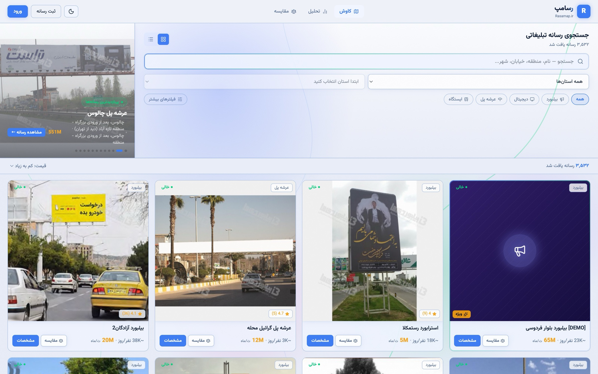
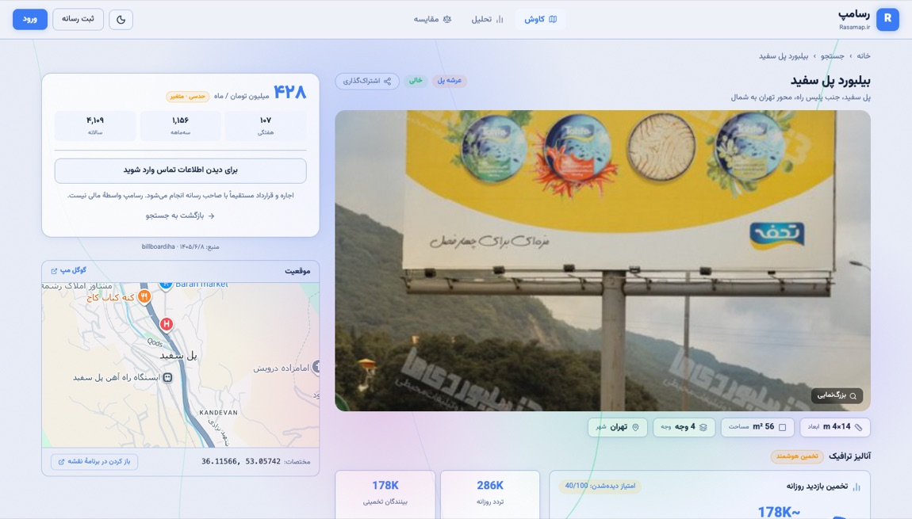
سه اصل در طراحی حالتهای رابط رعایت شده است: هر فهرست حالت «خالی» طراحیشده دارد و صفحهٔ سفید نشان نمیدهد؛ هر دکمهٔ ارسال هنگام پرواز درخواست غیرفعال میشود تا ارسال دوباره رخ ندهد؛ و هر خطا پیام فارسی روشن دارد، نه کد وضعیت خام.
پروژه ۱۳۲ فایلِ TypeScript دارد. وقتی فایلی چیزی را از فایلِ دیگرِ
همین پروژه import میکند، یک «وابستگی» میانشان ساخته میشود؛ در کلِ پروژه ۳۹۸
چنین وابستگی وجود دارد. این عددها با یک اسکریپت که خودِ مخزن را میخواند و همهٔ دستورهای
import را میشمارد استخراج شدهاند، نه با تخمین. پس آنچه در ادامه میآید تصویرِ
معماریِ واقعیِ موجود است، نه معماریِ آرزوشده.
| لایه | فایل | نقش |
|---|---|---|
| Proxy | ۱ | proxy.ts — پیش از هر درخواست اجرا میشود |
| صفحهها | ۳۰ | آنچه کاربر در مرورگر میبیند |
| مؤلفههای رابط | ۳۲ | قطعههای رابط کاربری که چند صفحه از آنها استفاده میکنند |
| API routes | ۳۴ | نقطههای ورودِ HTTP (آدرسهای /api/) |
| احراز هویت | ۶ | نشست، سقف نرخ، شناسهٔ کاربر، رد ممیزی |
| ابزارهای مشترک | ۱۷ | ثبت رخداد، پاسخ خطا، اعتبارسنجی محیط، قالببندی |
| Data Access Layer | ۲ | تنها راه رسیدن به پایگاه داده |
| طرحواره و دادهٔ اولیه | ۶ | مهاجرت، پرکردنِ اولیه، حذف تکراری، افزودنِ مختصات |
| پیکربندی | ۴ | تنظیمات ساخت و اجرا |
lib/db/ تنها راهِ رسیدن به پایگاه داده است؛ هیچ صفحه یا مسیری اتصالِ
جداگانهای به دیتابیس نمیسازد و همه از همین یک در رد میشوند.نمودار زیر نشان میدهد وقتی کاربر در صفحهٔ جستوجو شهری را انتخاب میکند، درخواستِ او گامبهگام از چه مسیری میگذرد. هر جعبه یک فایلِ واقعی در مخزن است و هر پیکان یک فراخوانی یا یک پاسخ. پیکانِ نقطهچین کاری است که در حاشیه انجام میشود و پاسخِ کاربر منتظرش نمیماند — اینجا، نوشتنِ یک سطر گزارش برای هر درخواست.
lib/db/billboards.ts را صدا میزند و از جعبههای
page.tsx و route.ts در وسط عبور نمیکند.دو شکل بعدی از یک دادهٔ واحد ساخته شدهاند — همان شمارشِ importها — ولی از
دو فاصله. نخستین شکل کل پروژه را در حدِ «لایه» جمع میبندد؛ دومی تکتکِ فایلها را نشان
میدهد.
هر فایلِ پروژه به یکی از این لایهها تعلق دارد. اگر همهٔ importها را بر
حسبِ لایهٔ فایلِ مبدأ و لایهٔ فایلِ مقصد دستهبندی کنیم، این نمودار به دست میآید.
هر پیکان از لایهٔ A به لایهٔ B یعنی «فایلهای A چیزهایی را از فایلهای B وارد
میکنند»، و عددِ رویش میگوید این کار در کل کد چند بار تکرار شده. برای نمونه،
«API routes → Auth : ۱۲۱ import» یعنی در ۱۲۱ نقطه، یک فایلِ مسیر
چیزی را از لایهٔ احراز هویت وارد کرده است. (برای خوانایی، فقط پیکانهایی رسم شدهاند که
میانِ دو لایهٔ متفاوت از این شش لایهاند و دستِکم چهار بار تکرار شدهاند؛ پیوندهای
درونلایهای و لایههای کوچکتر کنار گذاشته شدهاند.)
import است. پرتکرارترین پیکان (۱۲۱) از API routes به
لایهٔ احراز هویت میرود — یعنی بررسیِ نشست، سقفِ نرخ و شناسهٔ کاربر در عملاً هیچ مسیری جا
نیفتاده است. در مقابل، صفحهها فقط ۴ بار مستقیم به
Data Access Layer وصل شدهاند: همان استثنای
Server Component که در بخش ۱-۴ توضیح داده شد.شکلِ بعدی همان داده است، ولی این بار بدونِ جمعبندی: تکتکِ فایلها دیده میشوند. هر نوارِ افقی یک لایه است (نامش در سمت راست)، هر دایره یک فایل، و بزرگیِ دایره به تعدادِ خطوطِ آن فایل. در هر نوار، فایلها بر پایهٔ «چند فایلِ دیگر واردشان میکنند» چیده شدهاند: هرچه فایلی وابستهٔ بیشتری داشته باشد به وسطِ نوار نزدیکتر است. پس دایرههای درشتِ نزدیک به مرکزِ هر نوار، همان فایلهاییاند که بیشترِ پروژه به آنها تکیه دارد.
از آن ۱۳۲ فایل، ۲۷ فایل نه چیزی import میکنند و نه جایی وارد میشوند —
فایلهای قراردادیِ چارچوب (layout، loading، error)
که خودِ Next.js صدایشان میزند — پس ۱۰۵ فایلِ متصل میماند، با ۳۹۸
پیوند میانشان. کشیدنِ همهشان روی کاغذ فقط یک کلاف میشود؛ تنهی این شلوغی ۳۴ فایلِ مسیر
است که هرکدام چند چیز از لایههای احراز هویت و ابزارهای مشترک وارد میکنند. برای
خواندنیماندن، شکلِ زیر از هر لایه فقط چند فایلِ بزرگترش را نشان میدهد، بهاضافهٔ
فایلهای نامگذاریشده — رویِهم ۳۶ فایل و ۷۷ پیوند. الگوی کلی همان است؛ فقط انبوهگی
حذف شده.
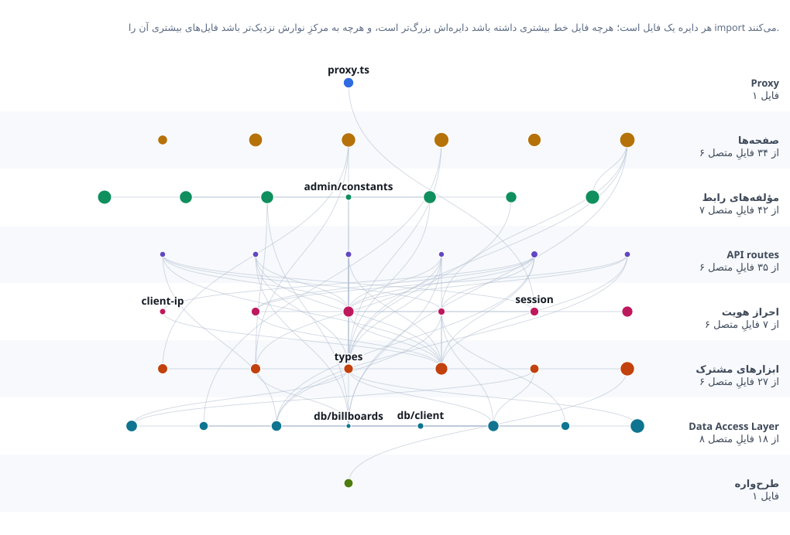
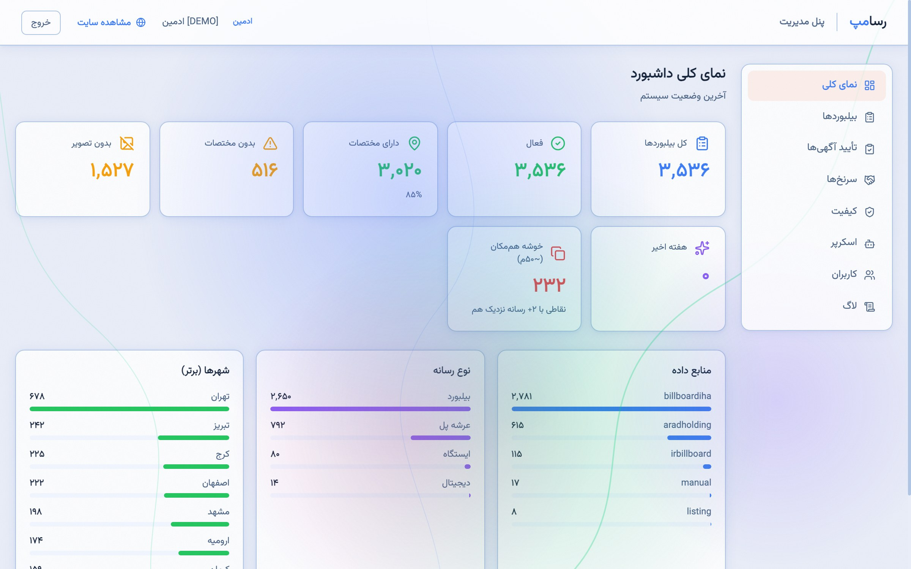
نمای کلی پنل مدیریت
جدولِ زیر همان هشت فایلِ نزدیک به مرکزِ نوارها را فهرست میکند؛ ستونِ «وابسته» یعنی چند
فایلِ دیگر این فایل را import میکنند. نکته این است که این هشت فایل دقیقاً
همان هشت گامِ پایپلاینِ ثابتِ فصل ۵اند — پس «پایپلاینِ ثابت» فقط یک ادعا در متن نیست،
در ساختارِ واقعیِ وابستگیها هم دیده میشود.
| وابسته | فایل | نقش در پایپلاین |
|---|---|---|
| ۳۴ | lib/api-log.ts | ثبت هر درخواست |
| ۳۳ | lib/auth/session.ts | بررسی نشست |
| ۳۲ | lib/auth/client-ip.ts | شناسهٔ کاربر که جعلشدنی نیست |
| ۳۲ | lib/auth/rate-limit.ts | سقف نرخ درخواست |
| ۳۱ | lib/api-rate-limit.ts | پاسخ مشترک «تعداد زیاد» |
| ۳۱ | lib/db/client.ts | تنها اتصال به پایگاه داده |
| ۲۶ | lib/types.ts | انواع دادهٔ دامنه، بدون داده |
| ۱۵ | lib/db/billboards.ts | لایهٔ دسترسی دادهٔ رسانهها |
اینکه ۳۱ فایل به lib/db/client.ts وابستهاند و
هیچ فایلی اتصال جداگانهای نمیسازد، یعنی ادعای «یک نقطهٔ ورود به پایگاه داده»
قابل بررسی است و نه شعاری. به همین ترتیب، حضور session.ts و
rate-limit.ts در صدر فهرست یعنی این بررسیها در مسیرها فراموش نشدهاند.
اگر روزی مسیری بدون این وابستگیها اضافه شود، از همین فهرست پیدا میشود.
یک نقشهٔ تعاملی از همین گراف (که در آن میتوان روی هر فایل زد و دید چه چیزی را صدا
میزند و چه کسی صدایش میزند) در مخزن پروژه به نشانی docs/codemap.html
قرار دارد و از روی همان استخراج خودکار ساخته میشود.
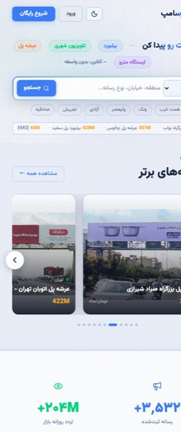
صفحهٔ نخست
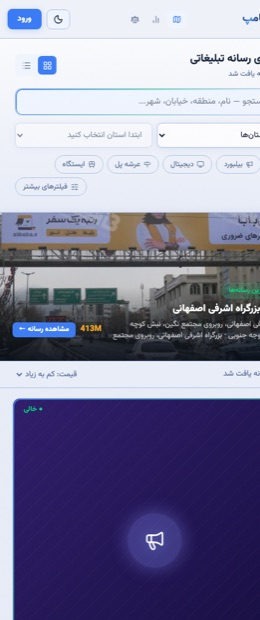
جستوجو
فصل پنجم
مهمترین تصمیمِ پیادهسازیِ این پروژه، ثابتکردنِ ترتیبِ بررسیهاست: هر مسیر برنامهنویسیِ مدیریتی، پیش از آنکه به کارِ اصلی برسد، از پنج دروازهٔ پشتِسرِهمِ یکسان میگذرد. نمودار زیر این دروازهها را نشان میدهد؛ هر لوزی یک بررسی است و اگر پاسخش «نه» باشد، درخواست همانجا با یک کدِ خطای HTTP رد میشود و جلوتر نمیرود (۴۰۱ = وارد نشدهای، ۴۰۳ = اجازه نداری، ۴۲۹ = زیادی درخواست فرستادی، ۴۰۰ = ورودیات بدشکل است).
async function POSTHandler(req, { params }) { const session = await getSession(); // ۱ — نشست if (!session || session.role === "user") return NextResponse.json({ error: "احراز هویت لازم" }, { status: 401 }); const ip = getClientIp(req); // ۲ — سقف نرخ const rl = adminApiRateLimit(ip); if (!rl.allowed) return rateLimited(rl, { … }); if (!hasPermission(session.role, "admin")) // ۳ — سطح دسترسی return NextResponse.json({ error: "فقط ادمین …" }, { status: 403 }); const parsed = BodySchema.safeParse(body); // ۴ — اعتبارسنجی if (!parsed.success) return NextResponse.json({ error: … }, { status: 400 }); … // ۵ — منطق کسبوکار }
دلیل ثابتبودن ترتیب، امنیتی است و نه سلیقهای:
این ترتیب در سند قواعد پروژه بهعنوان یک قاعدهٔ غیرقابل نقض ثبت شده تا در توسعهٔ بعدی بهاشتباه جابهجا نشود.
نشست کاربر یک توکن امضاشده با الگوریتم HS256 است که در کوکی HttpOnly با صفت SameSite=Strict قرار میگیرد؛ چنین کوکیای برای کد JavaScript صفحه قابل خواندن نیست، پس اسکریپتِ تزریقشده هم نمیتواند نشست را بدزدد. گذرواژهها هرگز بهصورتِ متنِ آشکار ذخیره نمیشوند؛ بهجایش با bcrypt (با ضریبِ هزینهٔ ۱۲) از هرکدام یک «هَش» ساخته میشود — یک رشتهٔ یکطرفه که از رویِ گذرواژه به دست میآید ولی از رویِ آن نمیتوان گذرواژه را بازساخت.
نکتهٔ ظریفتر، رفتارِ سامانه در برابرِ شمارهای است که در سامانه ثبت نیست. اگر سرور در این حالت فوراً جواب «شماره پیدا نشد» بدهد، از روی مدتِ پاسخ میتوان فهمید کدام شمارهها ثبتاند و کدام نه (وقتی شماره ثبت باشد، سرور وقتِ بیشتری صرفِ مقایسهٔ گذرواژه میکند). قطعه کدِ زیر این نشت را میبندد و رفتارش آزمونِ خودکار دارد.
در نمودارِ زیر — و همهٔ نمودارهای «جریان» در این فصل — هر ستونِ عمودی یک
بازیگر است (کاربر، مرورگر، یک مسیر، پایگاه داده)، پیکانها پیامهاییاند که در طول زمان از
بالا به پایین رد و بدل میشوند، و کادرِ alt / else یعنی «بسته به شرط، یکی از
این دو شاخه اجرا میشود».
export async function validateCredentials(email, password) { const user = await findUserByEmail(email); if (!user) { await bcrypt.compare(password, TIMING_PAD_HASH); // همان هزینهٔ زمانی return null; } const ok = await verifyPassword(password, user.passwordHash); return ok ? user : null; }
دسترسی مدیران چهار سطح پلکانی دارد و در هر مسیر مدیریتی، سطح لازم صریحاً بررسی میشود. نکتهٔ کلیدی آنکه این بررسی روی نقطهٔ پایانی انجام میشود، نه در رابط کاربری: پنهانکردن یک دکمه امنیت نیست، چون درخواست را میتوان مستقیم ساخت.
صاحب رسانه فرمی چندمرحلهای پر میکند و تصویر بارگذاری میکند. پذیرش فایل از عموم خطرناکترین نقطهٔ ورودی هر سامانه است، پس نوع فایل از بایتهای آغازین خودِ فایل تشخیص داده میشود، نه از نوع اعلامشدهٔ مرورگر. فایلی که ادعا میکند تصویر است ولی امضای بایتی تصویر ندارد، رد میشود.
function sniff(buf: Buffer): ImageKind | null { if (buf.length >= 3 && buf[0] === 0xff && buf[1] === 0xd8 && buf[2] === 0xff) return "jpeg"; if (buf.length >= 8 && buf[0] === 0x89 && buf[1] === 0x50 && buf[2] === 0x4e && buf[3] === 0x47 && buf[4] === 0x0d && buf[5] === 0x0a && buf[6] === 0x1a && buf[7] === 0x0a) return "png"; if (buf.length >= 12 && buf.toString("ascii", 0, 4) === "RIFF" && buf.toString("ascii", 8, 12) === "WEBP") return "webp"; return null; // ادعای مرورگر خوانده نمیشود }
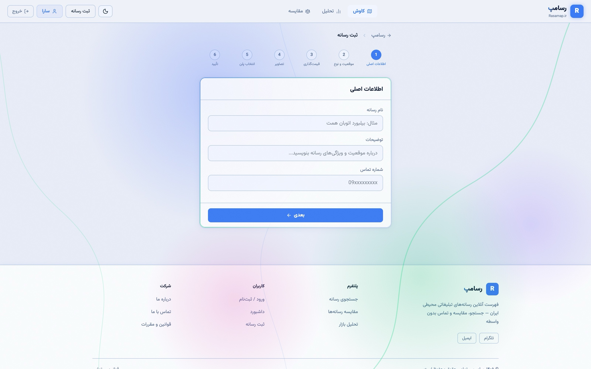
فرم چندمرحلهای ثبت آگهی
ارزشمندترین دادهٔ این سامانه فهرست شمارههای تماس مالکان است و سادهترین راه نابودی ارزش آن، قراردادنش در HTML صفحهٔ عمومی است. در این پیادهسازی شماره هرگز در صفحه قرار نمیگیرد (حتی برای کاربر واردشده) و تنها در پاسخ یک درخواست جداگانه ارسال میشود.
این سازوکار برداشت انبوه را ناممکن نمیکند؛ آن را پرهزینه میکند. مهاجمی که حاضر باشد حساب بسازد، وارد شود و سقف درخواست را رعایت کند، در نهایت میتواند داده را جمع کند. هدف طراحی، بالا بردن هزینه تا جایی است که برداشت انبوه صرف نکند — و ادعای بیش از این، ادعای نادرستی است.
بازیابی گذرواژه در سه گام انجام میشود: درخواستِ رمز، تأییدِ رمز، و تعیینِ گذرواژهٔ تازه. خودِ رمز هیچجا ذخیره نمیشود؛ فقط هَشِ آن — همان اثرِ یکطرفهای که پیشتر توضیح داده شد — بههمراهِ زمانِ انقضا در پایگاه داده میماند.
سه نوع خطای همروندی در این سامانه بهصورت ساختاری بسته شدهاند.
ارسال دوبارهٔ یک عملیات. کاربری که دکمهٔ ثبت را دو بار میزند یا اتصالش قطع میشود و دوباره میفرستد، نباید دو آگهی بسازد. هر ثبت آگهی یک کلید یکتایی همراه دارد؛ اگر همان کلید دوباره برسد، پاسخ ذخیرهشده بازگردانده میشود و رکورد دومی ساخته نمیشود.
تصمیم دوباره روی یک آگهی. اگر دو کارشناس همزمان یک آگهی را تأیید کنند، پلن ویژه نباید دو بار اعطا شود. تصمیم تأیید تکشلیک است: تلاش دوم پاسخ «تعارض» میگیرد.
خواندن، تغییر، نوشتن. ثبت یک نظر، میانگین امتیاز رسانه را هم تغییر میدهد. اگر این دو جدا انجام شوند، دو نظر همزمان میتوانند میانگین را خراب کنند. هر دو در یک تراکنش انجام میشوند: یا هر دو یا هیچکدام.
// فقط ردیفهایی که هنوز تصمیمی نگرفتهاند پذیرفته میشوند، پس کلیک دوم // نمیتواند آگهیِ منتشرشده را دوباره تأیید یا پلن ویژه را دوباره اعطا کند. if (!UNPUBLISHED_STATUSES.includes(existing.status)) { return NextResponse.json( { error: "این آگهی قبلاً بررسی شده است" }, { status: 409 }, ); }
در فرمِ ثبتِ آگهی، صاحبِ رسانه میانِ دو پلن یکی را برمیگزیند: رایگان یا ویژه. آگهیِ رایگان پس از تأییدِ کارشناس منتشر میشود. آگهیِ ویژه همان بررسی را دارد بهاضافهٔ یک پرداخت که — چون سامانه درگاهِ بانکی ندارد (بخش ۴-۳) — کارشناس آن را دستی تأیید میکند؛ در ازایش، آن آگهی نشانِ «ویژه» میگیرد و در فهرست بالاتر دیده میشود.
وضعیتِ هر آگهی با یک state machine مدل شده است: چند
وضعیتِ مشخص، و فهرستی از گذارهای مجاز میان آنها. آگهیِ رایگان از وضعیتِ
pending (در انتظارِ تأیید) آغاز میشود و آگهیِ ویژه از
awaiting_payment (در انتظارِ پرداخت). هر گذار فقط از یک وضعیتِ معیّن ممکن
است، پس «کلیکِ دوم» روی یک تصمیم — که دیگر از وضعیتِ درست شروع نمیشود — رد میشود.
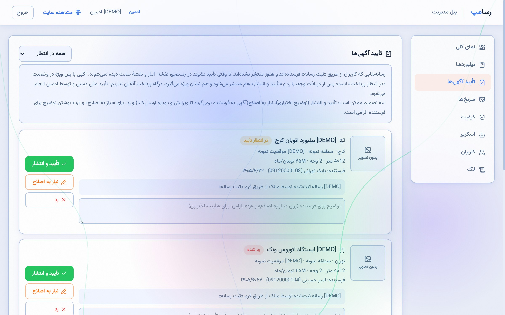
صف بررسی آگهیها در پنل مدیریت
منابعِ دادهٔ موجود برای هر سازه یک عکس، یک اندازه و یک نامِ خیابان منتشر میکنند و نه بیشتر. اما عددی که خریدار واقعاً برای تصمیم به آن نیاز دارد — «چند نفر در روز این سازه را میبینند» — در هیچ منبعی نیست. مدلِ زیر آن را از همان دادهٔ در دسترس برآورد میکند و از همان سهگامی پیروی میکند که صنعتِ جهانیِ تبلیغاتِ محیطی به کار میبرد: نخست عبورِ روزانه از کنارِ سازه شمرده میشود، بعد به «نفر» تبدیل میشود، و در پایان با ضریبی کوچکتر از یک ضرب میشود که میگوید چه سهمی از این جمعیت واقعاً امکانِ دیدنِ این سازهٔ مشخص را دارد.
راهنمای نمادها —
roadClassbase: عبورِ پایهٔ آن نوع معبر (جدولِ زیر) ·
cityFactor: ضریبِ اندازهٔ شهر · spread: تنوعِ کوچکی که از
شناسهٔ خودِ رکورد میآید تا دو سازه در یک خیابان عددِ یکسان نگیرند ·
occupancy: سرنشین بهازای هر خودرو (۱٫۵۵) · pedestrians: عابرانِ
پیاده · seeroad، seetype: چه سهمی از عبورِ
آن معبر و آن نوعِ رسانه فرصتِ خواندنِ پیام را دارد · sizeBonus: افزایشِ ناشی
از بزرگیِ سازه (حداکثر ۳۰٪) · impressions: برآوردِ نهاییِ بازدیدِ روزانه.
پایهٔ مدل، کلاسِ معبر است (بزرگراه، بلوار، تقاطع، …) و نه جمعیتِ شهر. این تمایز، اصلاحِ یک خطای واقعی در نسخهٔ نخستِ مدل بود: آن نسخه کارِ هر سازهٔ تهران را با درصدی از جمعیتِ نهمیلیونیِ شهر آغاز میکرد و در نتیجه یک تابلو در یک کوچهٔ فرعی هم ادعای ۴۵۰٬۰۰۰ بیننده در روز داشت. حقیقت این است که یک بزرگراه در هر شهری ترافیکِ بزرگراه دارد؛ جمعیتِ شهر فقط اندکی بزرگترش میکند — نه به همان نسبت.
| کلاس معبر | عبور روزانه | ضریب پیاده | سهم دیدن |
|---|---|---|---|
| بزرگراه و آزادراه | ۱۲۰٬۰۰۰ | ۰٫۰۱ | ۳۴٪ |
| بلوار و خیابان اصلی | ۵۲٬۰۰۰ | ۰٫۰۹ | ۴۲٪ |
| تقاطع و میدان | ۳۸٬۰۰۰ | ۰٫۲۲ | ۵۵٪ |
| خیابان معمولی | ۱۷٬۰۰۰ | ۰٫۱۸ | ۴۶٪ |
| ایستگاه حملونقل | ۶٬۰۰۰ | ۲٫۴۰ | ۶۱٪ |
| معبر محلی | ۷٬۰۰۰ | ۰٫۱۴ | ۴۰٪ |
کلاس هر سازه با تطبیق واژگان فارسی نشانی آن تعیین میشود و تطبیق از بلندترین کلیدواژه آغاز میشود تا نام یک مسیر مشخص بر واژهٔ عام درون آن اولویت بگیرد. هر نشانی ناشناخته به «خیابان معمولی» نگاشت میشود — که انتخاب صادقانهای است، چون بیشتر نشانیهای موجود در داده همیناند.
اثرِ جمعیتِ شهر خطی نیست. ضریبِ شهر برابر است با «نسبتِ جمعیت به یک میلیون» به توانِ ۰٫۳۵ — یعنی یک توانِ کسری، نه ضربِ ساده. تهران ۲۳ برابرِ زنجان جمعیت دارد، ولی خیابانهایش ۲۳ برابرِ خودرو جابهجا نمیکنند؛ حدودِ سه برابر. این توانِ کسری روشِ استانداردِ بیانِ همین نکته است و پراکندگیِ عددها را در کلِ فهرست از حدودِ ۷۰ برابر به حدودِ ۴ برابر میآورد.
اندازه بازده نزولی دارد. دو برابر کردن سطح یک سازه، تعداد خوانندگانش را دو برابر نمیکند؛ بنابراین مساحت با جذر وارد فرمول میشود و اثرش به حداکثر ۳۰٪ افزایش محدود است. نسبت نهایی دیدهشدن نیز میان ۱۸٪ و ۸۲٪ مقید میماند.
خروجی قطعی است. مدل هیچ عددِ تصادفیای ندارد. تنوعِ لازم (تا دو سازه در یک خیابان عددِ یکسان نگیرند) از هَشکردنِ شناسهٔ خودِ رکورد به دست میآید؛ چون شناسه ثابت است، همان رکورد در هر اجرا دقیقاً همان عدد را میگیرد. نسخهٔ نخست از یک ضریبِ تصادفی استفاده میکرد و نتیجهاش این بود که هیچ عددی در گزارش بازتولیدپذیر نبود.
این یک برآورد است، نه اندازهگیری، و سامانه هم همین را به کاربر میگوید. اعتبارش از دو چیز میآید: پیروی از شکلی که صنعت به کار میبرد، و ثبت منبع هر ضریب در کد — جمعیتِ شهرها از سرشماری، ضریبِ ۱٫۵۵ نفر بر خودرو از ارقامِ منتشرشدهٔ شرکتِ کنترلِ ترافیکِ تهران برای سفرهای شهری، و قیمتهای مرجعِ مدل از میانهٔ قیمتهایی که خودِ منابع منتشر کردهاند. آنچه این مدل ادعا نمیکند، جایگزینیِ یک سرشماریِ میدانی است.
قاعدهٔ حاکم این است: کاربر هرگز نباید صفحهٔ سفید یا پیامِ فنیِ خام ببیند، و توسعهدهنده هرگز نباید از فهمیدنِ اینکه چه چیزی خراب شده ناتوان بماند. این دو خواسته با هم در تعارضاند و پاسخ، جدا کردنِ این دو مخاطب از هم است.
هنگامِ بروزِ یک خطای پیشبینینشده، یک شناسهٔ کوتاه ساخته میشود. کاربر یک پیامِ آرامِ فارسی بههمراهِ همان شناسه میبیند؛ اما stack trace (فهرستِ توابعی که تا لحظهٔ خطا صدا زده شده بودند)، خودِ پرسوجو و جزئیاتِ درونی فقط در گزارشِ سرور و کنارِ همان شناسه نوشته میشوند. کاربر شناسه را گزارش میکند و توسعهدهنده دقیقاً همان رخداد را پیدا میکند، بیآنکه چیزی از درونِ سامانه بیرون درز کرده باشد.
هر رخداد بهصورت یک شیء JSON در یک خط ثبت میشود. این قالب برای چشم انسان بهینه نیست، ولی برای پردازش ماشینی آماده است: اگر بعدها یک انباشتگر رخداد اضافه شود، هیچ تغییری در کد لازم نخواهد بود.
افزون بر این، هر تغییر مدیریتی (تأیید، رد، حذف، تغییر نقش) در یک رد ممیزی ماندگار با نشانی شبکه، شناسهٔ مدیر و جزئیات تغییر ثبت میشود.
فصل ششم
ارزیابی بر دو پایه انجام شده است: آزمونِ خودکار، و یک خودارزیابیِ صریح که نقاطِ ضعف را
هم فهرست میکند. آزمونها «در سطحِ واسطِ برنامهنویسی»اند؛ یعنی مثلِ یک کاربرِ بیرونی به
آدرسهای /api/ درخواستِ واقعیِ HTTP میفرستند و پاسخ را
میسنجند — نه اینکه توابعِ داخلی را جداجدا صدا بزنند. آزمونها روی یک نسخهٔ ساختهشده
(تولیدی) اجرا میشوند و نه سرورِ حالتِ توسعه: سرورِ حالتِ توسعه هر درخواست را در همان
لحظه از نو ترجمه میکند و وقتی یکی از آزمونها فهرست را صدها بار پیاپی میخواند، از مهلتِ
پاسخ میگذرد و کلِ اجرا گیر میکند. هر اجرا هم پایگاه دادهٔ جداگانهٔ خودش را از نو میسازد تا
نتیجه به وضعیتِ اجرای پیشین وابسته نباشد.
هیچیک از آزمونها به سرویسِ بیرونی وابسته نیست؛ لایهٔ پیامک هم بدونِ کلیدِ سرویس خاموش میماند، پس آزمونهای رمزِ یکبارمصرف، کد را داخلِ همان پایگاه دادهٔ محلی میخوانند و هیچ پیامی فرستاده نمیشود.
| سرفصل | آنچه سنجیده میشود |
|---|---|
| اعتبارسنجی ورودی | رد ورودی بدشکل، بیشازحد بزرگ، یا خارج از فهرست مجاز برای مرتبسازی و پالایش |
| کنترل دسترسی | دسترسی سطحبهسطح مدیران و دسترسی در سطح شیء — کاربر به دادهٔ کاربر دیگر نرسد |
| سقف نرخ درخواست | فعالشدن سقف و بازگشت پاسخ درست پس از پایان بازه |
| عدم شمارش کاربران | یکسان بودن پاسخ برای شمارهٔ ناموجود و گذرواژهٔ اشتباه — هم در متن پاسخ و هم در زمان پاسخ |
| بارگذاری فایل | رد فایلی که ادعای تصویر دارد ولی امضای بایتی تصویر ندارد |
| ماشین حالت تأیید | مجاز بودن فقط گذارهای تعریفشده و تکشلیک بودن هر تصمیم |
| بازیابی گذرواژه | چرخهٔ کامل رمز یکبارمصرف، انقضا و محدودیت تعداد تلاش |
| درستی مرتبسازی | درست بودنِ ترتیبِ خروجی — با یک محافظ که مانع میشود آزمون روی فهرستِ خالی «بهدروغ» سبز شود |
| رفتارِ وابسته به نوعِ اتصال | روشنشدنِ نشانهٔ «امن» روی کوکی وقتی سایت پشتِ یک پروکسیِ HTTPS است، و روشننشدنش روی اتصالِ سادهٔ محلی |
چند آزمون، رفتار کاربر را نمیسنجند بلکه قواعد پروژه را میسنجند: اینکه هر پاسخ «تعداد زیاد» از یک تابع مشترک عبور کند و هیچ انیمیشن بیپایانی بدون توقف در زبانهٔ پنهان نماند. اینها آزمونهاییاند که جلوی بازگشت خطاهای گذشته را میگیرند.
در جریانِ توسعه، شش خطای جداگانه پیدا شد که همه یک ریشه داشتند: کد فرض کرده بود
ویژگیهای اتصالِ کاربر همان است که روی رایانهٔ توسعهدهنده دیده میشود — مثلاً «چون
الان روی localhost هستیم، پس اتصال امن نیست». این خطاها روی رایانهٔ
توسعهدهنده کاملاً نامرئی بودند و فقط وقتی بیرون میزدند که سایت از دستگاهِ دیگری روی شبکهٔ
محلی باز شود — دقیقاً همان کاری که داور با تلفن همراهش میکند.
| خطا | اصلاح |
|---|---|
| نشانهٔ «امن» روی کوکی از یک متغیرِ محیطیِ زمانِ ساخت خوانده میشد، نه از خودِ اتصال | خواندهشدن از پروتکلِ واقعیِ همان درخواست |
| بررسیِ مبدأ، آدرس را با نامی که سرور روی آن بالا آمده مقایسه میکرد | مقایسه با سرآیندِ «میزبان»ِ خودِ درخواست |
| نسخهبرداریِ متن با واسطِ استانداردِ مرورگر، بیرون از یک بسترِ امن کار نمیکرد | یک تابعِ مشترک با مسیرِ جایگزین برای این حالت |
ساختِ نشانیِ کاملِ سایت به localhost برمیگشت و لینکها روی موبایل میشکست | یک منبعِ واحد برای نشانیِ سایت در کلِ پروژه |
| ویژگیِ lazy load (بارگذاریِ تصویر با تأخیر تا لحظهٔ دیدهشدن) روی کارتهایی فعال بود که در یک نوارِ چرخاناند و هیچگاه واردِ دید نمیشوند | حذفِ آن از عناصری که کاربر نمیتواند به آنها اسکرول کند |
| انیمیشنِ بیپایان در زبانهٔ پنهان هم ادامه مییافت و پردازنده را بیدار نگه میداشت | افزودن به فهرستِ توقف هنگامِ پنهانشدنِ صفحه |
درس این تجربه فراتر از شش اصلاح است. پس از شناسایی الگو، یک قاعدهٔ دائمی در سند قواعد پروژه ثبت شد بههمراه یک پرسش آزمون: «آیا این تغییر وقتی سایت از دستگاه دیگری روی شبکهٔ محلی باز شود هم کار میکند؟» دو مورد از این رفتارها اکنون آزمون خودکار دارند.
جدول زیر ارزیابیِ نگارنده از محورهای مختلفِ کار است، همراه با نقطهٔ ضعفِ هر محور.
| محور | شواهد | نقطهٔ ضعف |
|---|---|---|
| معماری | یک Data Access Layer، دو مسیرِ دادهٔ چارچوب هرکدام سرِ جای درستش، پایپلاینِ ثابت روی هر مسیر | یک بار، کلِ مجموعهٔ داده در بستهای که به مرورگر میرفت جا خوش کرده بود؛ خطا با اندازهگیری پیدا و بهصورتِ ساختاری اصلاح شد |
| پایگاه داده | طرحوارهای که درست normalize شده، نمایههای ترکیبی منطبق بر پرسوجوهای واقعی، مهاجرتِ نسخهبندیشده | موتور تکفایلی است، و چند فیلد (مثلِ فهرستِ تصویرها) بهجای جدولِ جداگانه، بهصورتِ JSON درونِ یک ستون ذخیره شدهاند — یک سازشِ آگاهانه در مدلسازی |
| امنیت | مرزِ دسترسی روی خودِ نقطهٔ پایانی، چهار سطحِ دسترسی، کوکیِ امضاشده، سقفِ نرخ، رد ممیزی، پیامِ خطای عمومی | بدونِ فایروالِ کاربردی (WAF) و بدونِ آزمونِ نفوذِ بیرونی |
| همروندی | کلیدِ یکتا روی ثبتِ آگهی، تصمیمِ تأییدِ تکشلیک، تراکنش روی بازمحاسبهٔ امتیاز | شمارندههای سقفِ نرخ در حافظهٔ همین یک نمونهٔ سرورند؛ برای استقرارِ چندنمونهای باید به یک انبارهٔ مشترک منتقل شوند |
| آزمون | ۱۱۳ آزمون که مثلِ کاربرِ بیرونی به /api/ درخواست میزنند، روی نسخهٔ ساختهشده و پایگاه دادهٔ جداگانه |
آزمونِ تکمؤلفهای و آزمونِ سرتاسری در مرورگر وجود ندارد |
| مدیریت خطا | صفحههای خطای فارسی، شناسهٔ پیگیری، حالتهای «خالی» و «در حالِ بارگذاری»ِ طراحیشده | چند جریان هنوز نخستین نشانهٔ خطا را بهصورتِ کدِ وضعیتِ خام نشان میدهند |
| داده | ۳٬۵۳۶ رکورد از سه منبع، حذفِ تکراری، ۸۵٪ دارای مختصات | گردآوریِ یکبارهٔ نقطهای است، نه جریانی که خودکار بهروز شود؛ خزنده جزوِ سامانهٔ در حالِ اجرا نیست |
فصل هفتم
هدف این پایاننامه ساختن یک نمای واحد و قابل جستوجو از عرضهٔ رسانهٔ تبلیغاتی محیطی بود. سامانهای ساخته شده که ۳٬۵۳۶ رسانه از سه منبع را در یک فهرست یکپارچه گرد آورده، ۸۵٪ آنها را روی نقشه نشانده، و برای همهشان عددی برای بازدید روزانه برآورد کرده که در هیچ منبع اصلی وجود نداشت.
فهرست زیر صادقانه است و برای پیشگیری از برداشت اغراقآمیز از نتایج آورده میشود:
مسیر ادامهٔ کار، به ترتیب اولویت و با در نظر گرفتن اینکه هیچکدام نیازمند بازطراحی معماری نیستند:
| # | کار | شرح |
|---|---|---|
| ۱ | اجرای زمانبندیشدهٔ خزنده | تبدیلِ گردآوریِ یکبارهٔ نقطهای به بهروزرسانیِ دورهای، با تشخیصِ تغییر و نگهداشتنِ نسخههای پیشین |
| ۲ | اعتبارسنجیِ میدانیِ مدلِ بازدید | مقایسهٔ خروجیِ مدل با شمارشِ واقعی در چند نقطهٔ نمونه و تنظیمِ ضرایب بر همان اساس |
| ۳ | آزمونِ سرتاسری در مرورگر | پوششِ خودکارِ جریانهای کلیدیِ کاربر، در کنارِ آزمونهای فعلیِ لایهٔ API |
| ۴ | مهاجرت به یک موتورِ کلاینت-سروری (مثلِ PostgreSQL) | عوضکردنِ نشانیِ اتصال و اجرای دوبارهٔ همان مهاجرتها؛ بدونِ بازنویسیِ کد |
| ۵ | سقفِ نرخِ اشتراکی | انتقالِ شمارندهها به یک انبارهٔ مشترک تا استقرارِ چندنمونهای ممکن شود |
| ۶ | اتصال به درگاهِ پرداخت | پس از احرازِ شرایطِ حقوقی؛ منطقِ کسبوکار از پیش آماده است |
| ۷ | فعالسازیِ پیامکِ رمزِ یکبارمصرف | کلِ لایهٔ پیامک و چرخهٔ رمزِ یکبارمصرف پیادهسازی شده و آزمونِ خودکار دارد؛ فقط چون کلیدِ سرویس تنظیم نشده در حالتِ خواب است و بهمحضِ افزودنِ KAVENEGAR_API_KEY به .env بدونِ هیچ تغییرِ کدی فعال میشود |
| ۸ | جمعآوریِ متمرکزِ رخدادها و هشدار | قالبِ ثبتِ رخداد از ابتدا ماشینخوان است، پس افزودنِ آن تغییری در کد لازم ندارد |
آنچه این پروژه را از یک تمرین دانشگاهی متمایز میکند، نه فهرست قابلیتهایش که استدلال پشت مرزهایش است. تصمیم به نساختن رزرو آنلاین، انتخاب یک موتور پایگاه دادهٔ ساده بههمراه مستندکردن مسیر خروج از آن، پذیرش صریح اینکه محافظت از دادهٔ تماس مطلق نیست، و اصلاح مدلی که پیشتر عددی غیرواقعی تولید میکرد، همگی تصمیمهاییاند که ثبت و توجیه شدهاند. سامانهای که میداند چه کاری را انجام نمیدهد و چرا، از سامانهای که همه چیز را ناقص ادعا میکند قابل اتکاتر است.
پیوستها
docs/ مخزن.پیوست الف
تمام کد، مستندات فنی و تاریخچهٔ توسعهٔ این پروژه در مخزن زیر در دسترس است:
تنها پیشنیاز، محیط اجرای Node.js نسخهٔ ۲۰ یا بالاتر است. هیچ سرویس بیرونی، پایگاه دادهٔ جداگانه یا کانتینری لازم نیست.
پس از اجرا، سامانه از هر دستگاه دیگری روی همان شبکهٔ محلی با نشانی
http://<نشانیمحلی>:3000 در دسترس است؛ تمام رفتارهای وابسته به
اتصال برای همین حالت آزموده شدهاند (بخش ۲-۶). دستور npm test نیز ۱۱۳ آزمون را
روی یک ساخت تولیدی و پایگاه دادهٔ ایزوله اجرا میکند.
npm run demo
دستور npm run dev فقط هنگام نوشتن کد کاربرد دارد.
برای نخستین بازدید از ده مسیر، حالت توسعه ۹٫۷ ثانیه پردازنده مصرف میکند و حالت
ساختهشده ۰٫۱ ثانیه، یعنی حدود ۹۷ برابر کمتر.
پیوست ب
تصاویر زیر از نسخهٔ در حال اجرای سامانه گرفته شدهاند و دادهٔ درونشان واقعی است. صفحههایی که نیاز به ورود دارند با حسابهای نمونه باز شدهاند. صفحهٔ جستوجو، صفحهٔ جزئیات، فرم ثبت آگهی و صف بررسی در فصلهای ۴ و ۵ آمدهاند.
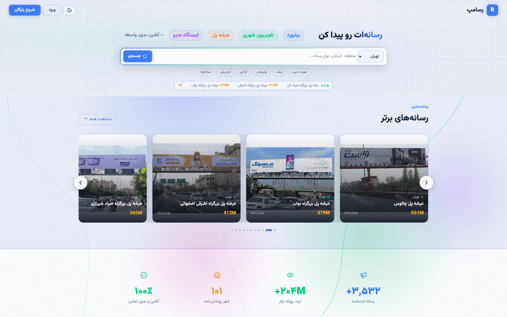
صفحهٔ نخست
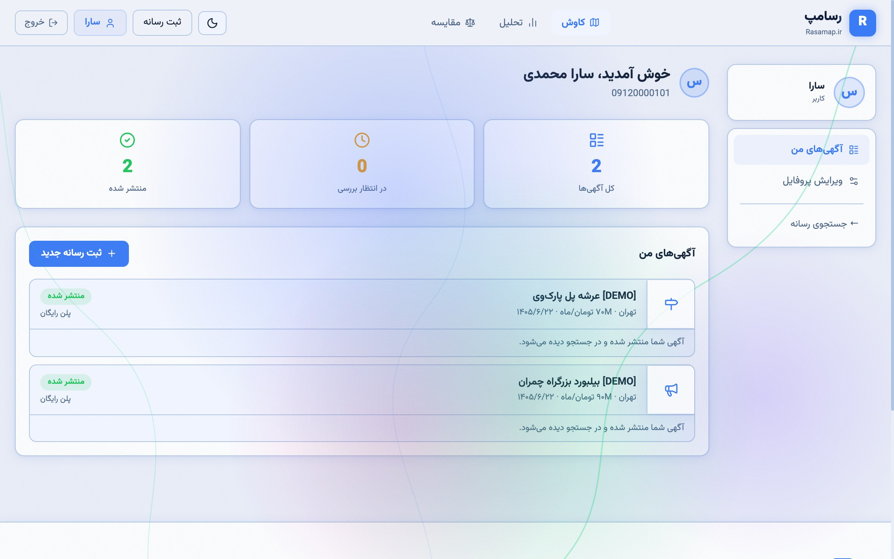
پیشخوان کاربر
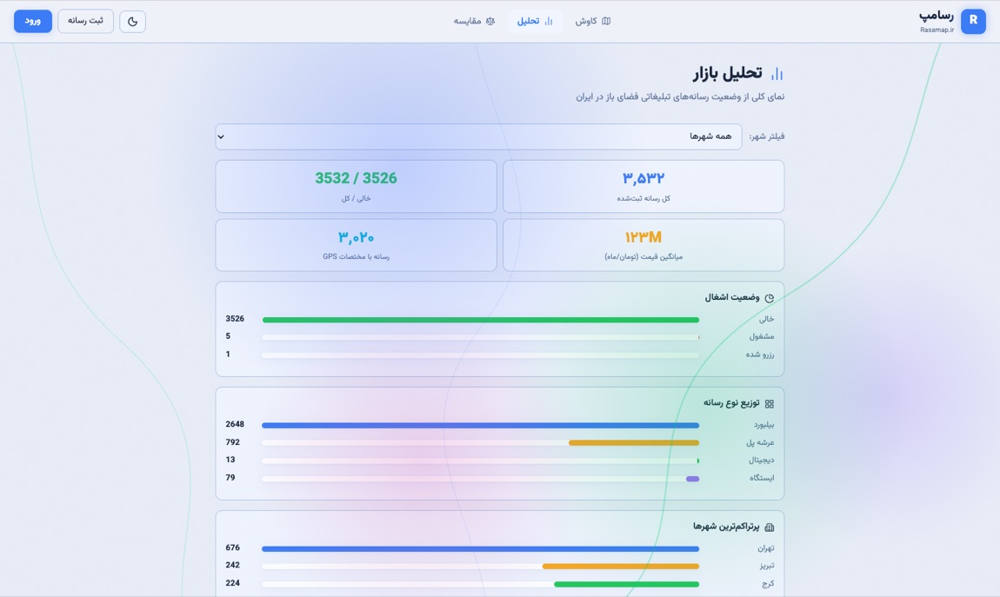
صفحهٔ تحلیل
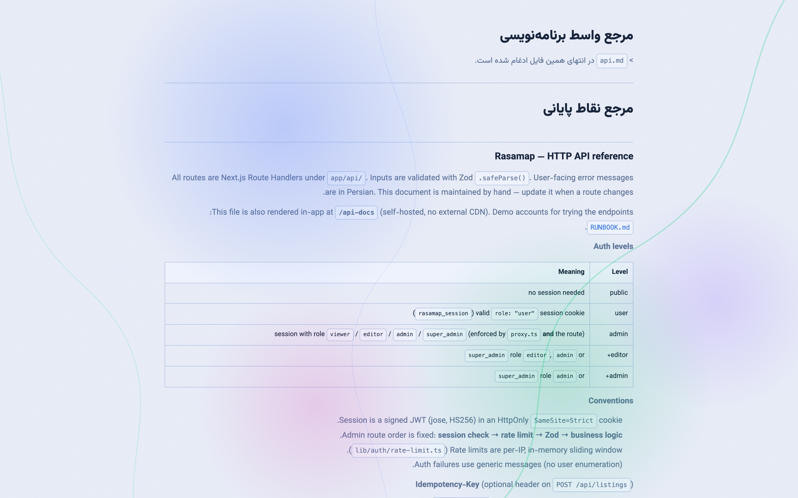
مرجع واسط برنامهنویسی
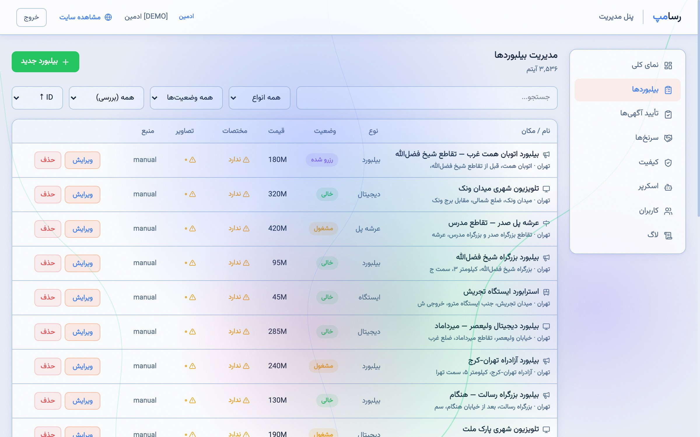
فهرست و ویرایش رسانهها
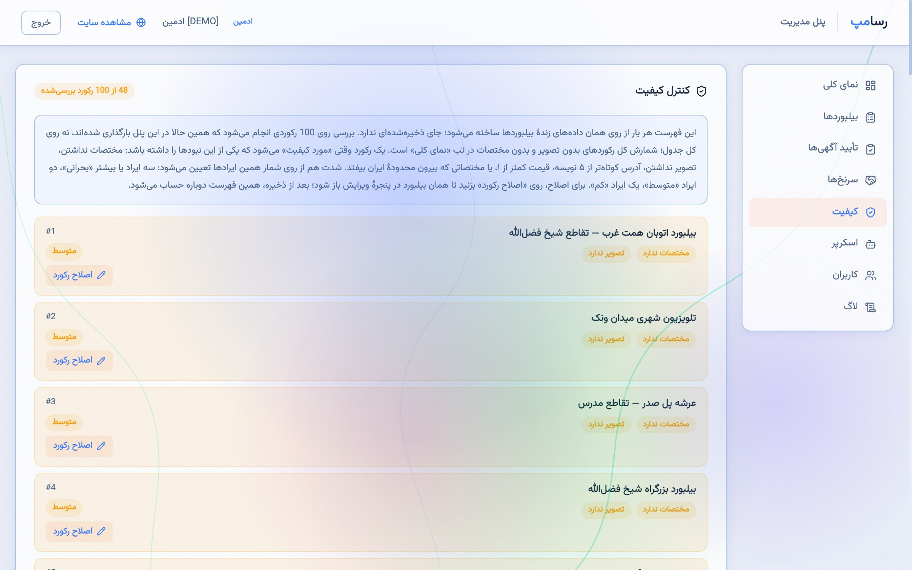
وضعیت کیفیت داده
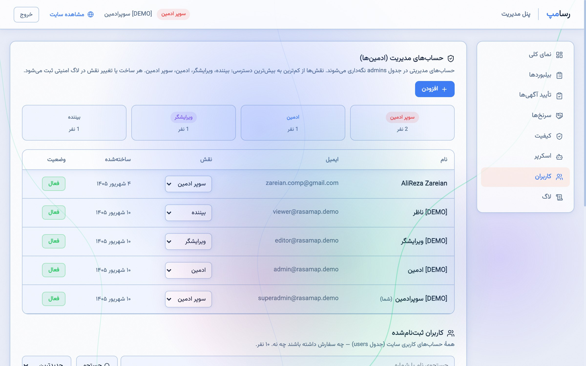
مدیریت مدیران و سطوح دسترسی
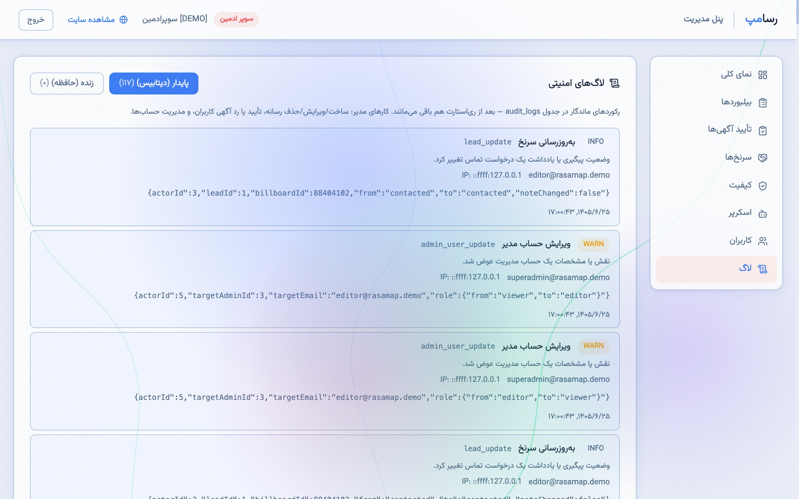
رد ممیزی
The market for out-of-home advertising media in Iran (billboards, footbridge panels, transit shelters and urban displays) is fragmented. Each structure's details sit with its own owner or contractor, so a buyer looking for a suitable placement must contact several intermediaries separately. The result is that no single searchable view of the available supply exists.
This thesis presents the design and implementation of a web system that gathers that supply into one searchable catalogue. It serves two user groups: advertising buyers, who search and filter across 3,536 media units in 101 cities, view each unit's details and map position, and (after authenticating) obtain the owner's contact number; and media owners, who submit their own listings through a multi-step form for expert review before publication.
The system is implemented as a single codebase on Next.js 16 and React 19, with a data layer over SQLite through Prisma 7 and authentication by a signed token in an HttpOnly cookie. The interface is entirely Persian and right-to-left. Seed data was collected from three public sources by a Python scraper and consolidated after duplicate removal.
The work's distinguishing contribution is a daily-audience estimation model. None of the surveyed sources publishes an exposure figure, although this is precisely the number a buyer needs. The model follows the shape used by the international out-of-home industry — count passing traffic, convert it to people, then discount by the share who could actually see that particular face — driven by road class rather than city population, and is fully deterministic and reproducible.
Engineering effort concentrated on server-side quality: a fixed, non-reorderable request pipeline on every route, schema validation on all input, rate limiting keyed to a non-spoofable client identity, idempotency guarantees on non-idempotent operations, and a durable audit trail for every administrative change. Correctness is verified by 113 automated API-level tests, all passing against a production build.
Keywords: out-of-home advertising, web marketplace, Next.js, server-side rendering, API security, concurrency, SQLite
University of Zanjan
Thesis Submitted in Partial Fulfilment of the Requirements
for the Degree of Bachelor of Science (B.Sc.) in
By
Supervisor